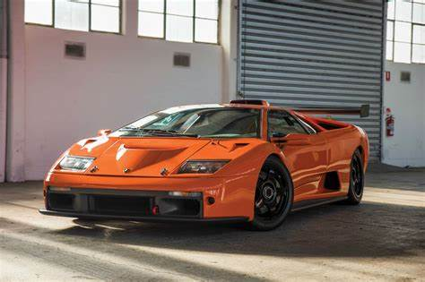

Ferrari Testarossa
A empresa Prancing Horse recuperou o nome Testarossa que já usava há anos para um desportivo apresentado em 1984.

BMW E30 M3
Em março de 1986, a BMW começou a fabricar aquele que seria, para a maioria dos entusiastas, seu maior ícone: o M3 de primeira geração...
Opala
O Chevrolet Opala é um dos ícones da indústria automobilística brasileira, lançado em 1968 e produzido até 1992.

Lamborghini Diablo
O Lamborghini Diablo é um modelo superdesportivo da Lamborghini que foi produzido entre 1990 e 2001. O nome Diablo...

Volkswagen Typ 1
O Volkswagen Typ 1, popularmente conhecido como Fusca (no Brasil) ou Carocha (em Portugal), foi o primeiro modelo...

Volkswagen Gol
O Volkswagen Gol quadrado 1994 é um modelo que se destaca por suas características.